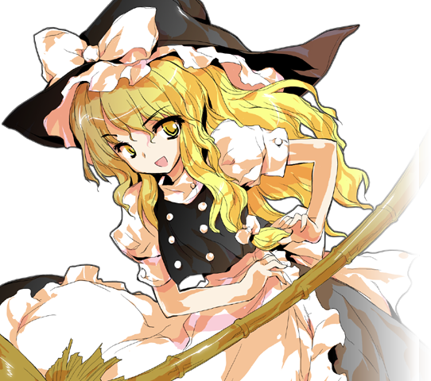

霧雨魔理沙 키리사메 마리사
キャラクター 캐릭터
普通の魔法使い。一人称「私」、語尾は「〜だぜ」。豪快で勝気、火力至上主義。物を「借りて」いって返しません。
평범한 마법사. 1인칭 「私」, 어미 「〜だぜ」. 호쾌하고 승부욕이 강한 화력 지상주의자. 물건을 '빌려 가서' 돌려주지 않습니다.
サンプル4（Hikari） 3:32〜3:52
샘플 4 (Hikari) 3:32〜3:52
台詞 대사
掛け声 기합 (14)
| No | ファイル名 | 状況 상황 | 台詞 | 読み | 意味 뜻 |
|---|---|---|---|---|---|
| 1 | vo_marisa_eff_l_01 | 弱攻撃の掛け声 약공격 기합 | はっ！ | はっ | 핫! |
| 2 | vo_marisa_eff_l_02 | 弱攻撃の掛け声 약공격 기합 | よっ！ | よっ | 욧! |
| 3 | vo_marisa_eff_l_03 | 弱攻撃の掛け声 약공격 기합 | それっ！ | それっ | 옛다! |
| 4 | vo_marisa_eff_l_04 | 弱攻撃の掛け声 약공격 기합 | ほらっ！ | ほらっ | 자! |
| 5 | vo_marisa_eff_h_01 | 強攻撃の掛け声 강공격 기합 | おりゃあっ！ | おりゃあっ | 으랴앗! |
| 6 | vo_marisa_eff_h_02 | 強攻撃の掛け声 강공격 기합 | どりゃあっ！ | どりゃあっ | 도랴앗! |
| 7 | vo_marisa_eff_h_03 | 強攻撃の掛け声 강공격 기합 | せりゃあっ！ | せりゃあっ | 세랴앗! |
| 8 | vo_marisa_eff_h_04 | 強攻撃の掛け声 강공격 기합 | うおおっ！ | うおおっ | 우오옷! |
| 9 | vo_marisa_eff_w_01 | 強攻撃のひとこと 강공격 한마디 | いくぜ！ | いくぜ | 간다! |
| 10 | vo_marisa_eff_w_02 | 強攻撃のひとこと 강공격 한마디 | もらった！ | もらった | 잡았다! |
| 11 | vo_marisa_eff_w_03 | 強攻撃のひとこと 강공격 한마디 | 遅いぜ！ | おそいぜ | 느려! |
| 12 | vo_marisa_eff_w_04 | 強攻撃のひとこと 강공격 한마디 | ぶっとべ！ | ぶっとべ | 날아가라! |
| 13 | vo_marisa_eff_s_01 | ジャンプ・ダッシュの小さな息 점프·대시 숨소리 | よっ | よっ | 읏차 |
| 14 | vo_marisa_eff_s_02 | ジャンプ・ダッシュの小さな息 점프·대시 숨소리 | ほっ | ほっ | 홋 |
必殺技 필살기 (8)
| No | ファイル名 | 状況 상황 | 台詞 | 読み | 意味 뜻 |
|---|---|---|---|---|---|
| 15 | vo_marisa_Special1_01 | 必殺技1（技名） 필살기 1 (기술 이름) | マジックミサイル！ | まじっくみさいる | 매직 미사일! |
| 16 | vo_marisa_Special1_02 | 必殺技1（ひとこと） 필살기 1 (한마디) | 星をくらえ！ | ほしを くらえ | 별이나 먹어라! |
| 17 | vo_marisa_Special2_01 | 必殺技2（技名） 필살기 2 (기술 이름) | ナロースパーク！ | なろーすぱーく | 내로우 스파크! |
| 18 | vo_marisa_Special2_02 | 必殺技2（ひとこと） 필살기 2 (한마디) | 細めにいくぜ！ | ほそめに いくぜ | 가늘게 간다! |
| 19 | vo_marisa_Special3_01 | 必殺技3（技名） 필살기 3 (기술 이름) | ウィッチレイライン！ | うぃっちれいらいん | 위치 레이라인! |
| 20 | vo_marisa_Special3_02 | 必殺技3（ひとこと） 필살기 3 (한마디) | 突っ込むぜ！ | つっこむぜ | 돌격이다! |
| 21 | vo_marisa_Special4_01 | 必殺技4（技名） 필살기 4 (기술 이름) | アップスウィープ！ | あっぷすうぃーぷ | 업 스위프! |
| 22 | vo_marisa_Special4_02 | 必殺技4（ひとこと） 필살기 4 (한마디) | 甘いぜ！ | あまいぜ | 어림없지! |
スペルカード宣言 스펠카드 선언 (3)
| No | ファイル名 | 状況 상황 | 台詞 | 読み | 意味 뜻 |
|---|---|---|---|---|---|
| 23 | vo_marisa_Spell1_call | スペルカード（超必殺技）1の宣言 스펠카드 1 선언 | 恋符「マスタースパーク」！ | こいふ ますたーすぱーく | 연부, 마스터 스파크! |
| 24 | vo_marisa_Spell2_call | スペルカード（超必殺技）2の宣言 스펠카드 2 선언 | 彗星「ブレイジングスター」！ | すいせい ぶれいじんぐすたー | 혜성, 블레이징 스타! |
| 25 | vo_marisa_FinalSpark_call | テンション最大時、マスタースパークがファイナルスパークに変わる 텐션 최대 때 파이널 스파크 선언 | 魔砲「ファイナルスパーク」！ | まほう ふぁいなるすぱーく | 마포, 파이널 스파크! |
システム・挑発 시스템·도발 (7)
| No | ファイル名 | 状況 상황 | 台詞 | 読み | 意味 뜻 |
|---|---|---|---|---|---|
| 26 | vo_marisa_ThrowForward | 前投げ 앞 잡기 | ちょっと借りるぜ！ | ちょっと かりるぜ | 잠깐 빌린다! |
| 27 | vo_marisa_ThrowBack | 後ろ投げ 뒤 잡기 | あっち行ってな！ | あっち いってな | 저리 가 있어! |
| 28 | vo_marisa_SpiritCancel | スピリットキャンセル（動作を中断して仕切り直す） 스피릿 캔슬 | まだだぜ！ | まだだぜ | 아직이다! |
| 29 | vo_marisa_Bomb | ボム（相手を吹き飛ばす緊急回避） 봄(버스트) | 離れてな！ | はなれてな | 떨어져 있어! |
| 30 | vo_marisa_GuardCancel | ガードキャンセル（ガード中の反撃） 가드 캔슬 | 邪魔だぜ！ | じゃまだぜ | 방해된다고! |
| 31 | vo_marisa_Taunt_01 | 挑発 도발 | ふむふむ……この本、もうちょっと借りとくぜ。 | ふむふむ このほん もうちょっと かりとくぜ | 흠흠… 이 책, 좀 더 빌려 둘게. |
| 32 | vo_marisa_Taunt_02 | 挑発 도발 | なあに、そのうち返すって。 | なあに そのうち かえすって | 뭐, 언젠가 돌려준다니까. |
被ダメージ・KO 피격·KO (8)
| No | ファイル名 | 状況 상황 | 台詞 | 読み | 意味 뜻 |
|---|---|---|---|---|---|
| 33 | vo_marisa_hurt_l_01 | 小ダメージ 약한 피격 | いてっ！ | いてっ | 아얏! |
| 34 | vo_marisa_hurt_l_02 | 小ダメージ 약한 피격 | くっ！ | くっ | 큭! |
| 35 | vo_marisa_hurt_l_03 | 小ダメージ 약한 피격 | うおっ！ | うおっ | 우왓! |
| 36 | vo_marisa_hurt_h_01 | 大ダメージ・吹き飛び・投げられ 강한 피격·날아감·잡힘 | うわあっ！ | うわあっ | 우와앗! |
| 37 | vo_marisa_hurt_h_02 | 大ダメージ・吹き飛び・投げられ 강한 피격·날아감·잡힘 | ぐああっ！ | ぐああっ | 크아앗! |
| 38 | vo_marisa_hurt_h_03 | 大ダメージ・吹き飛び・投げられ 강한 피격·날아감·잡힘 | いってえっ！ | いってえっ | 아프잖아! |
| 39 | vo_marisa_KO_01 | KO（倒れる） KO | うわああああっ！ | うわああああっ | (비명) |
| 40 | vo_marisa_KO_02 | KO（倒れる） KO | ちぇっ……ここまでか…… | ちぇっ ここまでか | 쳇… 여기까지인가… |
ラウンド・勝敗 라운드·승패 (12)
| No | ファイル名 | 状況 상황 | 台詞 | 読み | 意味 뜻 |
|---|---|---|---|---|---|
| 41 | vo_marisa_Intro_01 | 登場（共通） 등장(공통) | パワーで押し切るぜ！ | ぱわーで おしきるぜ | 힘으로 밀어붙인다! |
| 42 | vo_marisa_Intro_02 | 登場（共通） 등장(공통) | 普通の魔法使いの、お通りだぜ。 | ふつうのまほうつかいの おとおりだぜ | 평범한 마법사 지나가신다. |
| 43 | vo_marisa_Intro_03 | 登場（共通） 등장(공통) | おっ、いい弾幕のにおいがするぜ。 | おっ いいだんまくの においがするぜ | 오, 좋은 탄막 냄새가 나는데. |
| 44 | vo_marisa_RoundWin_01 | ラウンド勝利（短く） 라운드 승리(짧게) | 楽勝だぜ！ | らくしょうだぜ | 식은 죽 먹기! |
| 45 | vo_marisa_RoundWin_02 | ラウンド勝利（短く） 라운드 승리(짧게) | 次いくぜ。 | つぎ いくぜ | 다음 간다. |
| 46 | vo_marisa_RoundWin_03 | ラウンド勝利（短く） 라운드 승리(짧게) | ちょろいぜ。 | ちょろいぜ | 쉽네. |
| 47 | vo_marisa_Win_01 | 試合に勝利 게임 승리 | パワーこそ正義、だぜ！ | ぱわーこそせいぎ だぜ | 힘이야말로 정의라고! |
| 48 | vo_marisa_Win_02 | 試合に勝利 게임 승리 | 勝った記念に、なにか借りてくぜ。 | かったきねんに なにか かりてくぜ | 이긴 기념으로 뭐 하나 빌려 간다. |
| 49 | vo_marisa_Win_03 | 試合に勝利 게임 승리 | 星になりたくなきゃ、出直してきな。 | ほしになりたくなきゃ でなおしてきな | 별이 되기 싫으면 다시 와. |
| 50 | vo_marisa_Perfect | ノーダメージで勝利 퍼펙트 승리 | かすりもしなかったな！ | かすりもしなかったな | 스치지도 못했네! |
| 51 | vo_marisa_RoundLose | ラウンド負け（相手の勝利ポーズ中） 라운드 패배 | ちぇっ、火力が足りなかったか。 | ちぇっ かりょくが たりなかったか | 쳇, 화력이 모자랐나. |
| 52 | vo_marisa_TimeOverLose | タイムオーバーで負け 타임오버 패배 | おいおい、もう時間切れかよ！ | おいおい もう じかんぎれかよ | 어이어이, 벌써 시간 끝이야? |
対戦相手別 상대별 (15)
| No | ファイル名 | 状況 상황 | 台詞 | 読み | 意味 뜻 |
|---|---|---|---|---|---|
| 53 | vo_marisa_Intro_reimu_a | 登場：霊夢戦（先に話す。霊夢が「暇じゃないわよ。勝ったら、お酒返しなさい。」と返します） 등장: 레이무전 (먼저 말함. 레이무의 응답 「안 한가하거든. 이기면 술 돌려줘.」) | よう霊夢、暇そうだな。一戦どうだ？ | よう れいむ ひまそうだな いっせんどうだ | 어이 레이무, 한가해 보이네. 한판 어때? |
| 54 | vo_marisa_Intro_reimu_b | 登場：霊夢戦（霊夢の「持ってったお酒、返しなさい。」に返す） 등장: 레이무전 (레이무의 「가져간 술, 오늘 갚아.」에 대답) | あれは借りただけだぜ。そのうち返すって。 | あれは かりただけだぜ そのうち かえすって | 그건 빌린 것뿐이야. 언젠가 갚는다니까. |
| 55 | vo_marisa_Win_reimu | 霊夢に勝利 레이무에게 승리 | 異変解決は、私の手柄だぜ。 | いへんかいけつは わたしのてがらだぜ | 이번 이변 해결은 내 공이다. |
| 56 | vo_marisa_Intro_cirno_a | 登場：チルノ戦（先に話す。チルノが「かき氷じゃない、最強だ！」と返します） 등장: 치르노전 (먼저 말함. 치르노의 응답 「빙수 아니야, 최강이야!」) | ちょうどいい、かき氷にしてやるぜ。 | ちょうどいい かきごおりにしてやるぜ | 딱 좋네, 빙수로 만들어 주지. |
| 57 | vo_marisa_Intro_cirno_b | 登場：チルノ戦（チルノの「魔理沙のレーザーなんか、凍らせてやる！」に返す） 등장: 치르노전 (치르노의 「마리사의 레이저 따위 얼려 주지!」에 대답) | 光は凍らないぜ、チルノ。 | ひかりは こおらないぜ ちるの | 빛은 안 얼거든, 치르노. |
| 58 | vo_marisa_Win_cirno | チルノに勝利 치르노에게 승리 | 最強も、パワーには勝てないぜ。 | さいきょうも ぱわーには かてないぜ | 최강도 힘에는 못 이기지. |
| 59 | vo_marisa_Intro_alice_a | 登場：アリス戦（先に話す。アリスが「貸したら、返ってこないでしょう？」と返します） 등장: 앨리스전 (먼저 말함. 앨리스의 응답 「빌려주면 안 돌아오잖아?」) | アリス、その人形一体貸してくれよ。 | ありす そのにんぎょう いったい かしてくれよ | 앨리스, 그 인형 하나만 빌려줘. |
| 60 | vo_marisa_Intro_alice_b | 登場：アリス戦（アリスの「また力押し？ 芸がないわね、魔理沙。」に返す） 등장: 앨리스전 (앨리스의 「또 힘으로 밀어붙이게? 재주가 없네, 마리사.」에 대답) | 力押しも、極めりゃ芸だぜ。 | ちからおしも きわめりゃ げいだぜ | 힘으로 밀어붙이기도 극에 달하면 재주지. |
| 61 | vo_marisa_Win_alice | アリスに勝利 앨리스에게 승리 | 人形に頼りすぎだぜ、アリス。 | にんぎょうに たよりすぎだぜ ありす | 인형한테 너무 기대잖아, 앨리스. |
| 62 | vo_marisa_Intro_patchouli_a | 登場：パチュリー戦（先に話す。パチュリーが「借りるなら、返却日を守って。」と返します） 등장: 파츄리전 (먼저 말함. 파츄리의 응답 「빌릴 거면 반납일을 지켜.」) | よう、また本を借りに来たぜ。 | よう またほんを かりにきたぜ | 어이, 또 책 빌리러 왔다. |
| 63 | vo_marisa_Intro_patchouli_b | 登場：パチュリー戦（パチュリーの「魔理沙、本を返して。全部よ。」に返す） 등장: 파츄리전 (파츄리의 「마리사, 책 돌려줘. 전부 다.」에 대답) | 全部？ まだ読み終わってないぜ。 | ぜんぶ まだ よみおわってないぜ | 전부? 아직 다 안 읽었는데. |
| 64 | vo_marisa_Win_patchouli | パチュリーに勝利 파츄리에게 승리 | たまには外で運動しな、パチュリー。 | たまには そとで うんどうしな ぱちゅりー | 가끔은 밖에서 운동 좀 해, 파츄리. |
| 65 | vo_marisa_Intro_flandre_a | 登場：フラン戦（先に話す。フランが「うん！ 壊れないでね、魔理沙！」と返します） 등장: 플랑드르전 (먼저 말함. 플랑드르의 응답 「응! 부서지지 마, 마리사!」) | 遊び相手が欲しいんだろ、フラン？ | あそびあいてが ほしいんだろ ふらん | 놀아 줄 상대가 필요하지, 플랑? |
| 66 | vo_marisa_Intro_flandre_b | 登場：フラン戦（フランの「魔理沙！ 今日は帰さないよ？」に返す） 등장: 플랑드르전 (플랑드르의 「마리사! 오늘은 안 보내 줄 거야.」에 대답) | なら、壁をぶち抜いて帰るぜ。 | なら かべを ぶちぬいて かえるぜ | 그럼 벽을 뚫고서라도 돌아가지. |
| 67 | vo_marisa_Win_flandre | フランに勝利 플랑드르에게 승리 | 遊びはここまでだぜ、フラン。 | あそびは ここまでだぜ ふらん | 놀이는 여기까지다, 플랑. |
予備（今は使っていない技名・スペル宣言。こちらも収録します） 예비 (지금은 안 쓰는 기술 이름·스펠 선언, 함께 녹음) (13)
| No | ファイル名 | 状況 상황 | 台詞 | 読み | 意味 뜻 |
|---|---|---|---|---|---|
| 68 | vo_marisa_Extra_MiasmaSweep | 予備の技名 예비 기술 외침 | ミアズマスウィープ！ | みあずますうぃーぷ | 미아즈마 스위프! |
| 69 | vo_marisa_Extra_GrandStardust | 予備の技名 예비 기술 외침 | グランドスターダスト！ | ぐらんどすたーだすと | 그랜드 스타더스트! |
| 70 | vo_marisa_Extra_MeteonicDebris | 予備の技名 예비 기술 외침 | メテオニックデブリ！ | めておにっくでぶり | 메테오닉 데브리! |
| 71 | vo_marisa_Extra_RadialStrike | 予備の技名 예비 기술 외침 | ラジアルストライク！ | らじあるすとらいく | 레이디얼 스트라이크! |
| 72 | vo_marisa_Extra_StellarMissile | 予備の技名 예비 기술 외침 | ステラミサイル！ | すてらみさいる | 스텔라 미사일! |
| 73 | vo_marisa_Extra_GreenSpread | 予備の技名 예비 기술 외침 | グリーンスプレッド！ | ぐりーんすぷれっど | 그린 스프레드! |
| 74 | vo_marisa_Extra_NonDirectionalLaser | 予備の技名 예비 기술 외침 | ノンディレクショナルレーザー！ | のんでぃれくしょなるれーざー | 논디렉셔널 레이저! |
| 75 | vo_marisa_Extra_MilkyWay | 予備の技名 예비 기술 외침 | ミルキーウェイ！ | みるきーうぇい | 밀키 웨이! |
| 76 | vo_marisa_ExtraSpell_StardustReverie | 予備のスペルカード宣言 예비 스펠카드 선언 | 魔符「スターダストレヴァリエ」！ | まふ すたーだすとれゔぁりえ | 마부, 스타더스트 레버리! |
| 77 | vo_marisa_ExtraSpell_DragonMeteor | 予備のスペルカード宣言 예비 스펠카드 선언 | 星符「ドラゴンメテオ」！ | ほしふ どらごんめてお | 성부, 드래곤 메테오! |
| 78 | vo_marisa_ExtraSpell_EarthlightRay | 予備のスペルカード宣言 예비 스펠카드 선언 | 光符「アースライトレイ」！ | こうふ あーすらいとれい | 광부, 어스라이트 레이! |
| 79 | vo_marisa_ExtraSpell_DoubleSpark | 予備のスペルカード宣言 예비 스펠카드 선언 | 恋心「ダブルスパーク」！ | こいごころ だぶるすぱーく | 연심, 더블 스파크! |
| 80 | vo_marisa_ExtraSpell_OrreriesSun | 予備のスペルカード宣言 예비 스펠카드 선언 | 儀符「オーレリーズサン」！ | ぎふ おーれりーずさん | 의부, 오레리즈 선! |